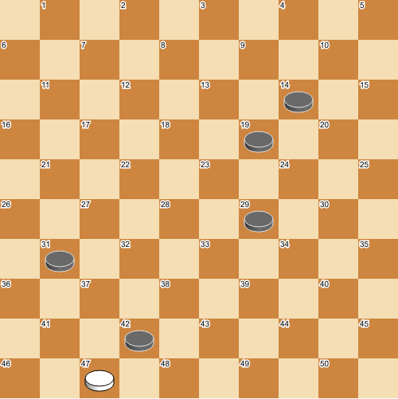

Future Directions¶
This section describes ideas and proposals for future versions of the PDN standard.
Alternative move disambiguation¶
Proposal
The current way of move disambiguation (see section PDN Grammars) was chosen for backward compatibility.
The following alternative is proposed. An ambiguous move is written as usual, followed by the sequence of
captured squares between angular brackets < and >. For example, in the following position

the two possible captures are written as 47x36 <42, 29, 14, 31> and 47x36 <42, 29, 19, 31>. The
motivation for this is that it is less complicated to implement, and easy to understand for humans.
Demo annotations¶
Proposal
In chess, it is common practice to embed graphical annotations directly in the move sequence using
embedded commands. Lichess and ChessBase, among others, support [%csl ...] (colored squares)
and [%cal ...] (colored arrows), where each entry is a color code followed by a square
name, e.g. [%csl Rf4,Ge5] highlights f4 in red and e5 in green, and [%cal Ge2e4] draws
a green arrow from e2 to e4.
A similar convention could be adopted for PDN, using square numbers instead of algebraic names:
[%csl R12,G23]— highlight square 12 in red and square 23 in green[%cal R12-23]— draw a red arrow from square 12 to square 23
For move demonstrations, an additional [%animate] command could signal to a viewer that
the variation should be played back automatically, which is useful for instructional material.